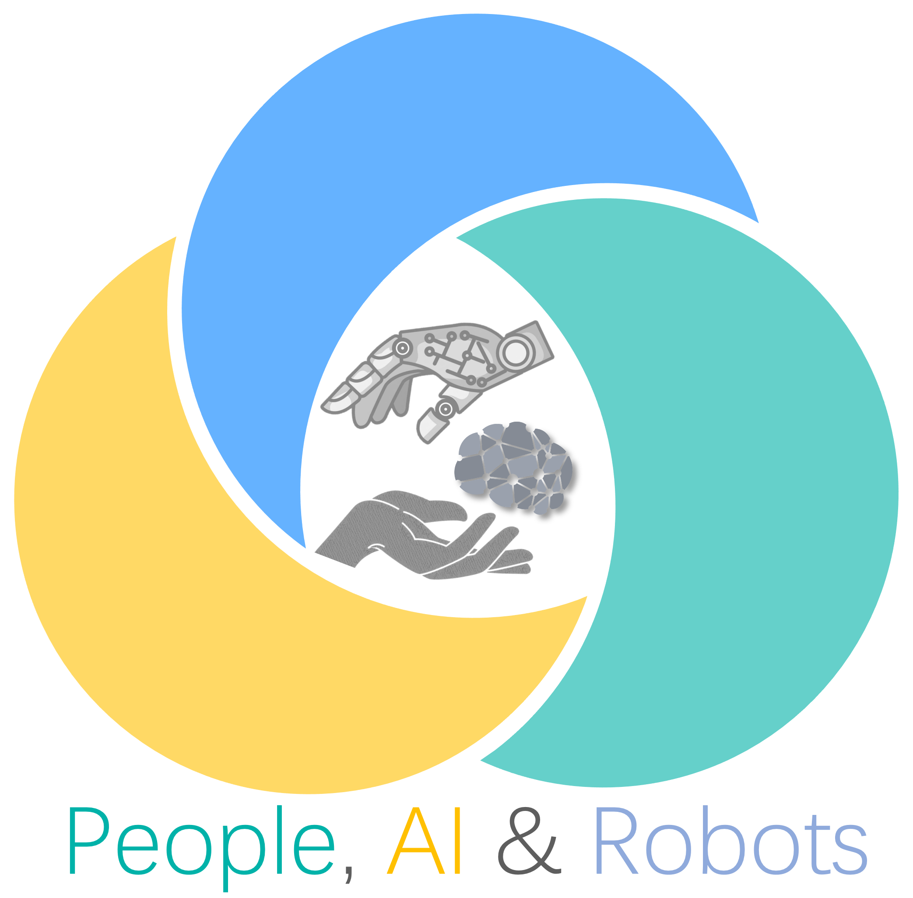

Brayden Zhang
Hi!
I’m a student at the University of Toronto studying Engineering Science with a focus in Machine Learning and Robotics. I’m interested in a wide range of topics, including ML for climate, robot learning and simulations, geography, and transportation.
Check out my blog for updates on my work and interests.
experience
|  | University of Toronto |
| AI Financial Power Group |
education
 | University of Toronto |
news
| Nov 16, 2023 | I gave a talk about my Geography Olympiad experience at the 2023 Royal Canadian Geographical Society’s Annual Dinner in Ottawa. |
|---|---|
| Aug 16, 2023 | I won a Bronze medal for Canada in the International Geography Olympiad! |